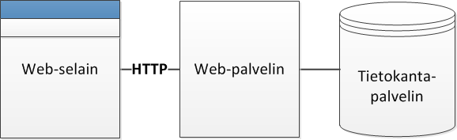
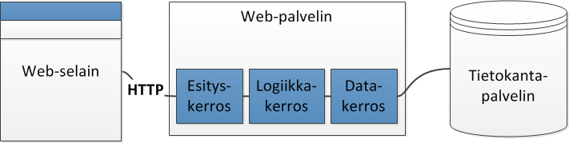
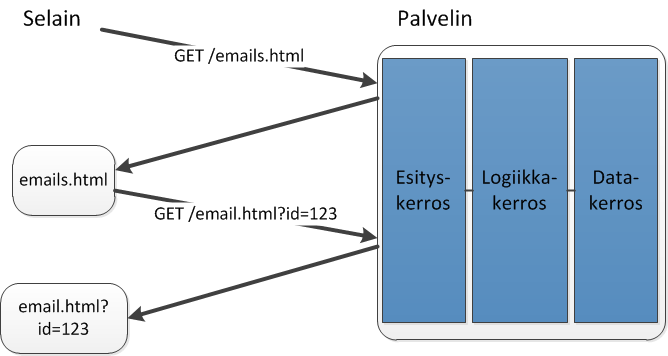
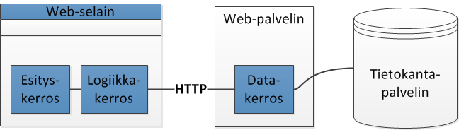
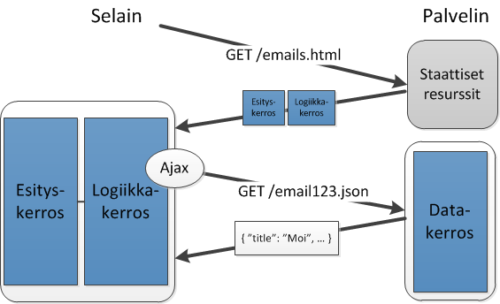
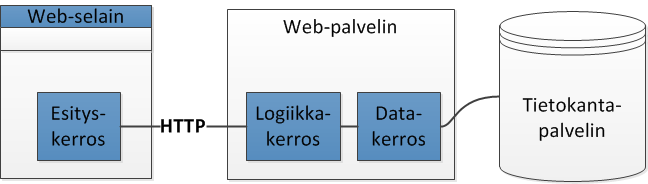
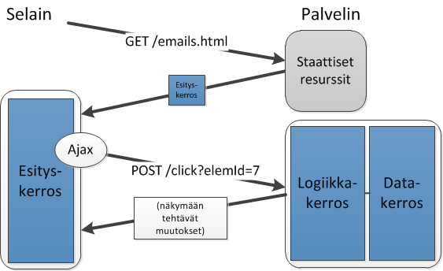

Web-sovelluksista
Erilaisia web-sovelluksia
Perinteisesti web-selain on toiminut vain renderöintialustana palvelimen tuottamille HTML-dokumenteille
- Dokumenteissa on linkkejä, joita seuraamalla ladataan seuraava HTML-dokumentti
JavaScript-kielen ja selaimen tarjoamien rajapintojen myötä entistä enemmän toiminnallisuutta voidaan siirtää selaimen suoritettavaksi
Web-sovellusta suunniteltaessa yksi olennainen kysymys on kuinka paljon toiminnallisuutta toteutetaan selainpäähän vs palvelinpäähän
Kerrosarkkitehtuuri
- Web-sovelluksen ohjelmakoodi voidaan jakaa loogisiin kerroksiin, joilla kullakin on oma roolinsa
- ns. kerrosarkkitehtuuri

- Usein käytetty jaottelu on kolme kerrosta:
- Esityskerros (Presentation Layer)
- Näkymän manipulointi
- Logiikkakerros (Business Logic Layer)
- Sovelluksen toimintalogiikka
- Datakerros (Data Layer)
- Datan lukeminen ja kirjoittaminen
- Yhteys tietokantaan
- Esityskerros (Presentation Layer)
Monitasoarkkitehtuuri
Loogisen jaottelun lisäksi täytyy huomioida se miten koko sovellus on fyysisesti jaoteltu
- Esim. mikä osa palvelimella ja mikä selaimessa
Fyysisen jaottelun yhteydessä puhutaan monitasoarkkitehtuureista (n-tier architecture)
- Tasot (tiers): fyysinen jaottelu
- Kerrokset (layers): looginen jaottelu
Kolmitasoarkkitehtuuri
- Usein pienessä/keskisuuressa web-sovelluksessa on kolme tasoa (3-tier
architecture).red[*]
- Web-selain (asiakastaso, client tier)
- Web-palvelin (sovellustaso, wep application tier)
- Tietokantapalvelin (tietokantataso, database tier)

*] n-tier architecture on yleisesti käytetty käsite, mutta eri tasojen nimet eivät ole vakiintuneita. Näissä kalvoissa käytetään samoja käsitteitä kuin mm. tässä artikkelissa, jossa on muutenkin hyvää lisätietoa aiheeseen liittyen.]
Tasot & kerrokset
Web-sovelluksen arkkitehtuuria suunnitellessa täytyy päättää mitä kerroksia sijoitetaan millekin tasolle
Kerrokset
- Tasot
- Käydään läpi muutama eri vaihtoehto -->
Kevyt asiakas
- Perinteinen tapa on sijoittaa kaikki kerrokset web-palvelimelle

Näkymät generoiva esityskerroskin on palvelimella
- Selain toimii vain yksinkertaisena HTML-renderöijänä
Tällaisesta ratkaisusta käytetään nimitystä kevyt asiakas
- thin client
Kevyt asiakas -esimerkki

Raskas asiakas
- Kevyen asiakkaan vastakohta on raskas asiakas
- fat/thick/heavy/rich client

- Sekä sovelluslogiikka että näkymän päivitys suoritetaan selaimessa
- Palvelimelle jää vain datarajapinta
Raskas asiakas -esimerkki

Kevyt vs raskas asiakas
Kevyt asiakas
- Ei juurikaan toimintalogiikkaa selaimessa
- Kun selain pyytää sivua, palvelin koostaa sen kokonaisuudessaan ja palauttaa selaimelle
Raskas asiakas
- Hyödyntää runsaasti JavaScriptiä, mm.
- näkymän manipulointiin
- datan hakemiseen palvelimelta Ajax-kutsuilla
- ym.
- Hyödyntää runsaasti JavaScriptiä, mm.
Myös saman web-sovelluksen/-sivuston jotkut osat voidaan toteuttaa kevyenä asiakkaana, jotkut raskaana
Raskaan asiakkaan hyötyjä
Ei sivunlatauksia
- parempi käyttökokemus
Vähemmän ladattavaa
- ei koko sivua, vain tarvittava data
Yksinkertaisempi palvelin
- skaalautuu
- palvelinresursseja ei tarvita niin paljoa, sillä suuri osa työstä tehdään käyttäjien selaimissa
HTML-, CSS- ja JavaScript-tiedostot ovat staattisia
- cacheutuvat hyvin
Raskaan asiakkaan ongelmia
Ensimmäinen sivunlataus voi olla hidas
Vaatii suorituskykyä selainpäässä
- voi olla ongelma mobiililaitteille
Selaimen takaisin-painike ja muu navigointi?
Hankala hakukoneroboteille
- ja kaikille muille jotka eivät suorita JavaScriptiä
Toteutuskielenä oltava JavaScript
- tai joku selain-plugin
- tai joku kieli, josta generoidaan julkaisuvaiheessa JavaScriptiä
Yhden sivun sovellus
Sellaista web-sovellusta, jossa HTML-dokumentti ladataan vain kerran, kutsutaan yhden sivun sovellukseksi
- Single Page Application (SPA)
- Esityskerros selainpäässä
Ensimmäisen latauksen jälkeen kaikki palvelin-kommunikaatio tapahtuu Ajax-kutsuin
SPA voi silti käyttäjän näkökulmasta koostua useammasta "sivusta"
SPA on yleensä raskas asiakas
- Esim. edellisen kalvon sähköpostiohjelma
- On kuitenkin myös kevyempiä SPA:eja
- kuten seuraavalla kalvolla -->
Kevyehkö asiakas.red[*]
- Esityskerros selaimella, muut palvelimella
- Selaimelta lähetetään palvelimelle "käyttöliittymätapahtumia"
- Palvelin lähettää näkymään tehtävät muutokset selaimelle

*] Ei oikea termi]
Kevyehkö asiakas -esimerkki
